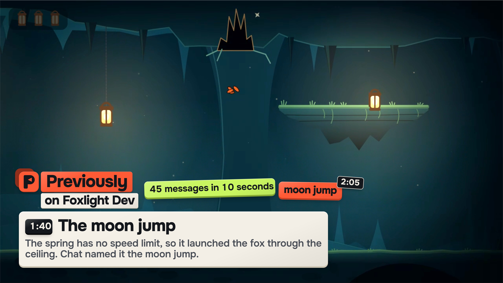
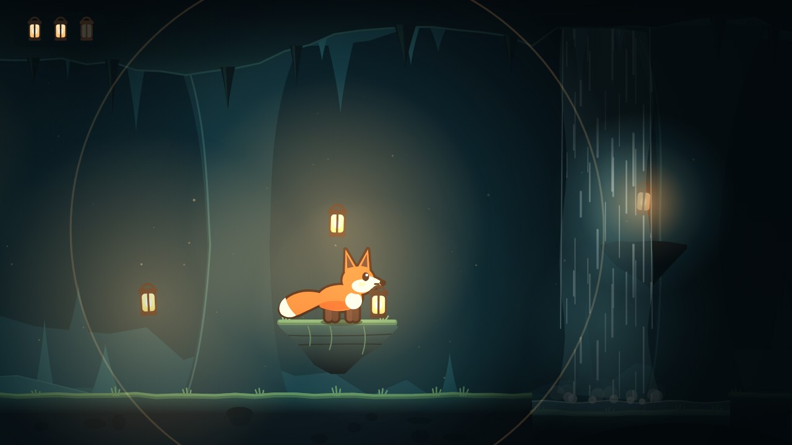
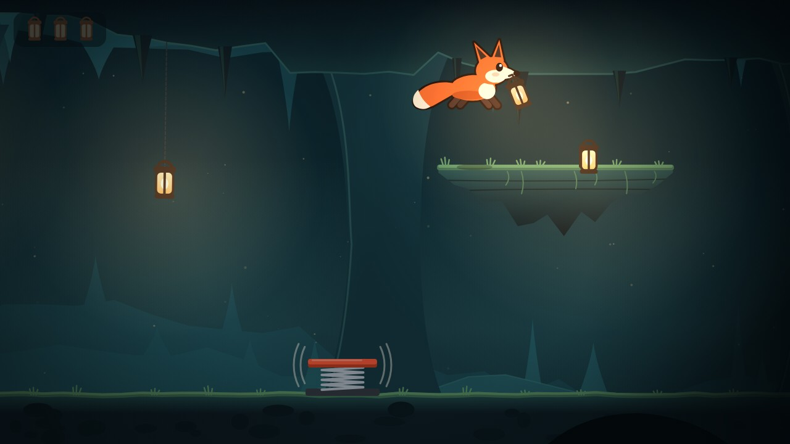
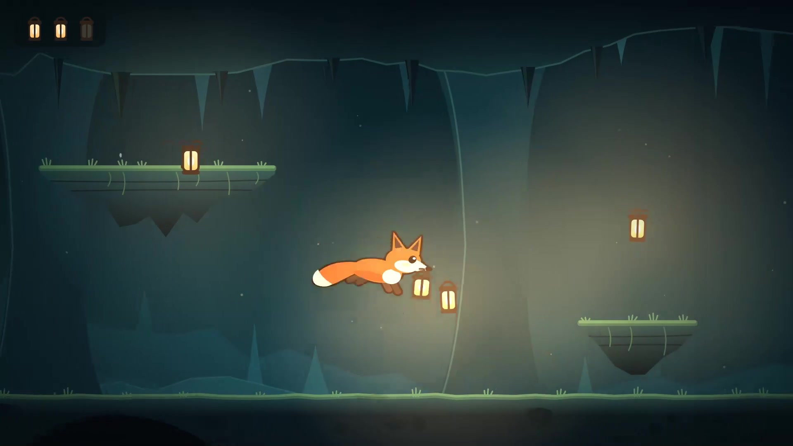
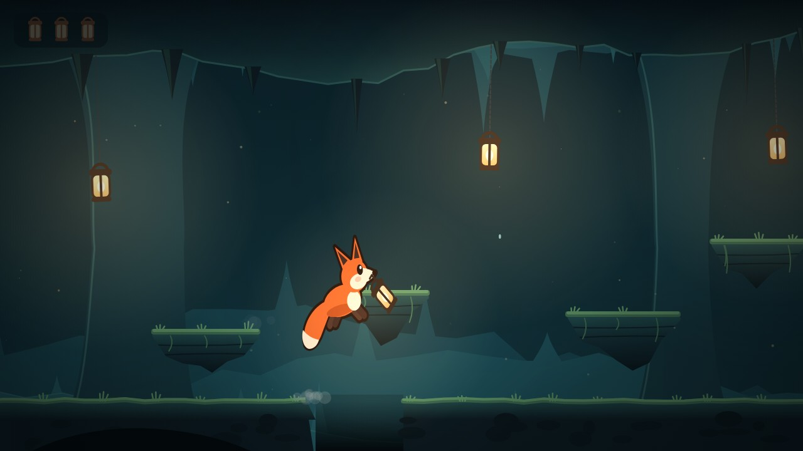

!previously

Previously
on your stream
A catch-up recap for every raid and late arrival on Twitch

What did
I miss?
A raid drops a whole audience into the middle of the stream. Chat is typing a joke they were not there for.
Chat at 1:4045 in 10 s
- MOON JUMP
- he's gone
- fox to the moon
- MOON JUMP MOON JUMP
- where did he go

Every raid gets its own
Previously on
Cut like a TV recap, from the stream's own clips
0:02Previously on
0:06Fox learns to jump
0:18The moon jump
0:36Right now
Intro
Fox learns to jump
The moon jump
Spring gets a speed limit
Right now
!previously0:000:100:200:300:40The example's whole recap, 44 seconds. Streamers choose up to 30 seconds, 1 minute or 2 minutes.

Late? Type
!previously
The bot answers in chat with the latest chapters, what is happening now and a link to the recap.
you !lore moon jump
Foxlight Dev moon jump: When the spring had no speed limit, it launched the fox through the ceiling, and chat named it the moon jump.
The story
so far
A page anyone can open without an account. Right now first, then the chapters with their clips. Read up to here stops spoilers.

Previously
in your stream's language
РанееAnteriormenteBisherPrécédemmentIn precedenzaWcześniejDaha önceРанішеこれまでの配信지난 이야기前情提要
Any language for the chapters. Scene and bot labels are built in for 14. English is the default.
The streamer
stays in control
Edit your wording replaces the chapter everywhere
Pause stops the microphone and chat at once
Forget erases the last 2 minutes

Fix it once
every place updates
3:30Moon jump becomes a cheat code
Edited by the streamer
Recap page
Chat answer
Next raid scene
The old wording is withdrawn everywhere at once.

Every sentence waits
75 s
The model only proposes. Code checks each sentence against what was said or typed, then holds it so the streamer can fix or forget it first.
Heard at 5:40Two lanterns work. The third one is behind the waterfall.
PublishedLanterns light the cave
Two lanterns work, and the third one is behind the waterfall.

Forget
reaches everything
Forget the last 2 minutes and every result built on them goes too. A late model reply cannot bring it back.
The chapters
Translations
Channel terms
Clips in the cache
Queued raid scenes
Recordings and exports
Built with
Codex
One session: research, architecture, code and tests, with parallel workers for runtime, storage, Twitch and interface.
1,000 of 1,000chat messages committed at 20 per second, no gaps
577,200messages through the story core over 8 virtual hours
Try it now
previously-seven.vercel.app/replay
The example recording runs in your browser with no keys. Jump to the raid, open the sources, apply a correction.
Then run it on your channel with your own Twitch app and OpenAI key. It has not run on a real broadcast yet.